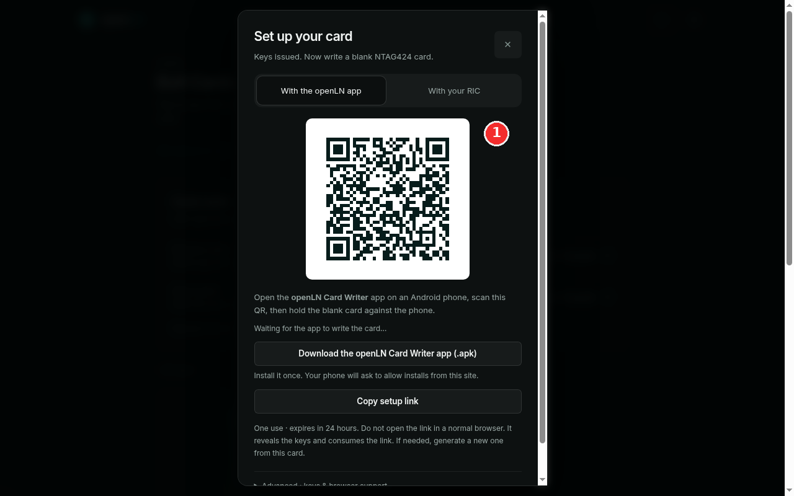
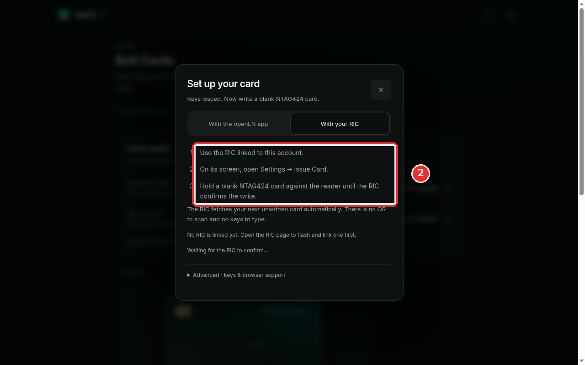
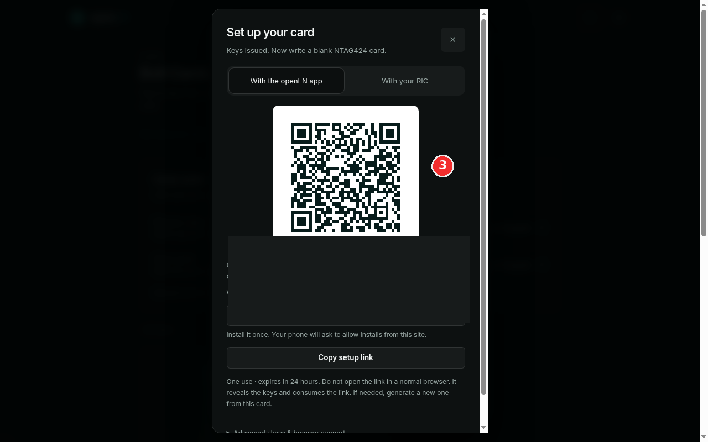

How to write a card (openLN app or RIC)
Issuing creates the card's record and keys in openLN; writing puts those keys onto the physical chip. There are two ways to write, and you use one of them per card: the openLN Card Writer app on an Android phone, or a RIC on the counter. Both start from the same Set up your card dialog, and both end the same way: the card's badge flips from READY TO WRITE to active, and the card can take payments.
- You have issued the card and it is waiting in the list with a READY TO WRITE badge. If you have not done that yet, start with How to issue a new Bolt card.
- You have a blank NTAG424 card ready to write. The card shop sells them, through the Get a physical card link on the Cards page.
- For the phone lane: an Android phone with NFC. The openLN Card Writer app comes from the setup dialog itself, as a .apk file (step 1).
- For the RIC lane: a RIC linked to your account, on the counter, with its card reader. No phone needed (step 2).
- Nothing is charged during a write, and no funds move.
Write with the openLN app, from the QR
Open the card's Set up your card dialog. It opens by itself right after you issue a card, and any card sitting at READY TO WRITE reopens it from the list. Stay on the With the openLN app tab. The red mark in the screenshot sits beside the setup QR, which is where this lane starts.
On the phone side, install the openLN Card Writer app if you have not already. It downloads from this very dialog, with the button Download the openLN Card Writer app (.apk). The line under it sets expectations: "Install it once. Your phone will ask to allow installs from this site." Allow that prompt once, and the app is on the phone for good. The writer app runs on Android phones with NFC.
Then the write itself: open the app, scan the QR shown in the dialog, and hold the blank card flat against the phone. The app writes the card's keys and settings onto the chip and reports the result back to openLN on its own, so there is nothing to type on the phone. Keep the dialog open while this happens. It sits on "Waiting for the app to write the card..." and flips to "Card written and linked to your wallet." when the write lands.
If you would rather not scan, press Copy setup link instead: it copies the same one-use link, and you can paste it into the app. Two rules for that link. It expires after 24 hours, and it can be read only once. And never open it in a normal browser: a browser is not a writer, it will show you the card's keys, and reading the link consumes it. If either happens, generate a new one from the card and use that.

Or write with your RIC, no link to handle
If you have a RIC on the counter, pick the other tab, With your RIC (the red mark in the screenshot). There is no QR to scan and nothing to type: the card's data travels to the terminal over your account. If no RIC is linked yet, the tab says so and links you to the place where one gets linked.
On the RIC itself, open Settings and choose Issue Card, then hold the blank card against the reader until the terminal confirms the write. The RIC fetches the next unwritten card from your account automatically, so this works even when the card was issued from a different device, and it never asks you for keys or codes.
The RIC writes one card at a time, oldest first. If the queue is holding another card's setup, the dialog warns you that another card is first, and asks you to finish or cancel that setup first. Clear it, then hold the blank card to the reader again.
As on the phone lane, the dialog is the scoreboard: it waits while the RIC writes, and flips to "Card written and linked to your wallet." when the card reports in.

Open Advanced for keys and browser support
The bottom of the dialog holds one more section, collapsed: Advanced - keys and browser support (the red mark in the screenshot). Open it when you want the detail in one place. It spells out the two lanes: phones write with the app, and a linked RIC pulls the next card from the write queue on its own. It is also where the card's keys are listed for the tools that need them.
Those keys are what make the card yours: they control the chip and the link to your wallet. In this example they are hidden on purpose. Keep card keys private. View them only on a device you trust, and copy them only into a writer you are deliberately using. Anyone who has the keys can write them onto another chip and spend from your wallet from that copy, so treat them like the card itself, only more so.
And the ending to expect: once the write lands, the card flips from READY TO WRITE to active. The badge in the list changes, the dialog reports "Card written and linked to your wallet.", and the card is live. It can take payments at the counter from that moment, and those payments settle straight to your wallet.

- One lane per card is enough. App or RIC, either one finishes the write. Use whichever you have at hand; the result is the same chip with the same card on it.
- The setup link is one use and 24 hours. Do not open it in a normal browser: it reveals the keys and consumes the link. If it lapses or gets spent, generate a new one from the card. The keyboard on the RIC lane does not exist, because there is no link to handle there.
- Keep the dialog open while writing. It is the scoreboard: it waits, then confirms. If you close it, the card still waits in the list, and its row reopens the dialog.
- Nothing is lost if you stop halfway. An unwritten card keeps its READY TO WRITE badge and simply cannot pay yet. Write it when a blank card is at hand.
- Your sats stay yours. Once the card is live, payments made with it settle straight to your wallet. openLN never takes custody of your funds. Limits and the payment PIN can be changed later from the card's page (manage a card).